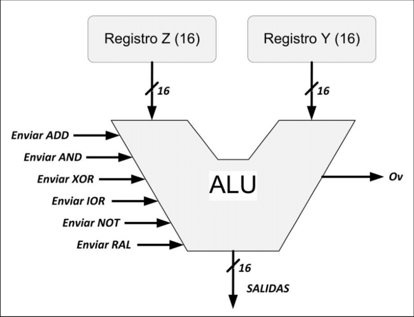

Unidad 1 Modelos de Arquitectura de Cómputo
1.1.1 Clásicas
Estas arquitecturas se desarrollaron en las primeras
computadoras electromecánicas y de tubos de vacío.
Hay dos arquitecturas distintas relacionadas con el uso y
distribución de la memoria: Arquitectura de Jonh Von
Neumman y Arquitectura Harvard.
Arquitectura Von Neumann
Tradicionalmente los sistemas con microprocesadores se
basan en esta arquitectura, en la cual la unidad central de
proceso (CPU), está conectada a una memoria principal
única (casi siempre sólo RAM) donde se guardan las
instrucciones del programa y los datos. A dicha memoria se
accede a través de un sistema interconexión de buses único
(control, direcciones y datos).
En un sistema con arquitectura Von Neumann el tamaño de
la unidad de datos o instrucciones está fijado por el ancho
del bus que comunica la memoria con la CPU. Así un
microprocesador de 8 bits con un bus de 8 bits, tendrá que
manejar datos e instrucciones de una o más unidades de 8
bits (bytes) de longitud.
Si tiene que acceder a una instrucción o dato de más de un
byte de longitud, tendrá que realizar más de un acceso a la
memoria.
El tener un único bus hace que el microprocesador sea más
lento en su respuesta, ya que no puede buscar en memoria
una nueva instrucción mientras no finalicen las
transferencias de datos de la instrucción anterior.
Las computadoras digitales convencionales presentan un
aspecto Von Neumann. Este modelo consta de cinco
componentes principales.
1.Unidad de Memoria.
2.Unidad de Entrada/Salida.
3.Unidad de Control. Incluidos CPU.
4.Unidad Aritmética Lógica. Incluida en CPU.
5.Registros de Programas. Incluidos en CPU.
Las instrucciones provenientes del sistema de entrada, son
almacenados por la memoria, procesados por la ALU bajo la
dirección de la unidad de control. Los resultados obtenidos
son enviados a la unidad de salida.
El programa almacenado es lo más importante en el modelo.
Los programas se almacenan en la memoria del equipo junto
con los datos a procesar.
Las limitaciones de este modelo son:
La longitud de las instrucciones por el bus de datos, que hace
que el microprocesador tenga que realizar varios accesos a
memoria para buscar instrucciones complejas.
La velocidad de operación a causa del bus único para datos e
instrucciones que no deja acceder simultáneamente a unos y
otras, lo cual impide superponer ambos tiempos de acceso.
Modelo Harvard
Esta arquitectura utiliza los Micro controladores, tiene la
unidad central de proceso (CPU) conectada a dos memorias
(una con las instrucciones y otra con los datos) por medio de
dos buses diferentes.
Una de las memorias contiene solamente las instrucciones
del programa (Memoria de Programa), y la otra sólo
almacena datos (Memoria de Datos).
Ambos buses son totalmente independientes lo que permite
que la CPU pueda acceder de forma independiente y
simultánea a la memoria de datos y a la de instrucciones.
Como los buses son independientes estos pueden tener
distintos contenidos en la misma dirección y también distinta
longitud.
También la longitud de los datos y las instrucciones puede
ser distinta, lo que optimiza el uso de la memoria en general.
Para un procesador de Set de Instrucciones Reducido, o
RISC (Reduced Instrucción Set Computer), el set de
instrucciones y el bus de memoria de programa pueden
diseñarse de tal manera que todas las instrucciones tengan
una sola posición de memoria de programa de longitud.
El tamaño de las instrucciones no está relacionado con el de
los datos, y por lo tanto puede ser optimizado para que
cualquier instrucción ocupe una sola posición de memoria de
programa, logrando así mayor velocidad y menor longitud de
programa.
El tiempo de acceso a las instrucciones puede superponerse
con el de los datos, logrando una mayor velocidad en cada
operación.
La principal desventaja de esta arquitectura; el bus de datos
y direcciones único se convierte en un cuello de botella por
el cual debe pasar toda la información que se lee de o se
escribe a la memoria, obligando a que todos los accesos a
esta sean secuenciales.
Limita el grado de paralelismo (acciones que se pueden
realizar al mismo tiempo) y por lo tanto, el desempeño de la
computadora.

1.1.2 Segmentadas
Es una de las tecnologías utilizadas para realizar la
segmentación o paralelismo. Divide el procesador, en etapas,
procesa una instrucción diferente en cada una y trabaja con
varias a la vez.
Pueden trabajar de forma paralela, en diferentes
instrucciones, utilizando una cola de instrucciones para su
comunicación, denominado entubamiento.
La dependencia de datos y de control, que tiene como efecto
la disminución del rendimiento del pipelining.
La segmentación de cauce (pipelining) es una forma efectiva
de organizar el hardware del CPU para realizar más de una
operación al mismo tiempo.
Consiste en descomponer el proceso de ejecución de las
instrucciones en fases o etapas que permitan una ejecución
simultánea.
La segmentación es una técnica de implementación por la
cual se solapa la ejecución de múltiples instrucciones.
La técnica de implementación clave utilizada para hacer
CPU rápidas.
La segmentación es como una línea de ensamblaje: cada
etapa de la segmentación completa una parte de la
instrucción.
Como en una línea de ensamblaje, la acción a realizar en una
instrucción se descompone en partes más pequeñas, cada una
de las cuales necesita una fracción del tiempo necesario para
completar la instrucción completa.
La segmentación es una técnica de implementación, que
explota el paralelismo entre las instrucciones de un flujo
secuencial. Tiene la ventaja sustancial que, de forma distinta
a algunas técnicas de aumento de velocidad, no es visible al
programador.
Tipos de cauces:
Unifunción: ejecutan un único proceso.
Multifunción: pueden ejecutar varios procesos.
Estáticos: en un instante determinado sólo pueden ejecutar uno.
Dinámicos: pueden ejecutar simultáneamente varios procesos.
Lineal: a cada etapa sólo le puede seguir otra etapa concreta.
No lineal: se pueden establecer recorridos complejos de las etapas.
1.1.3 Multiprocesamiento
Se denomina multiprocesador a un computador que cuenta
con dos o más microprocesadores (CPUs).
El multiprocesador puede ejecutar simultáneamente varios
hilos pertenecientes a un mismo proceso o bien a procesos
diferentes.
La arquitectura NUMA, donde cada procesador tiene acceso
y control exclusivo a una parte de la memoria.
La arquitectura SMP, donde todos los procesadores
comparten toda la memoria.
Para que un multiprocesador opere correctamente necesita
un sistema operativo especialmente diseñado para ello.
La mayoría de los sistemas operativos actuales poseen esta
capacidad.
Cuando se desea incrementar el desempeño más de lo que
permite la técnica de segmentación (pipeline), se requiere
utilizar más de un procesador para la ejecución del programa
de aplicación.
Los CPU de multiprocesamiento según Flynn se clasifican de la siguiente manera:
SISO - (Single Instruction, Single Operand) computadoras Monoprocesador.
SIMO - (Single Instruction, Multiple Operand) procesadores vectoriales, Exenciones MMX.
MISO - (Multiple Instruction, Single Operand) No implementado.
MIMO - (Multiple Instruction, Multiple Operand) sistemas SMP, Clusters, GPUs.

Los procesadores vectoriales, son computadoras pensadas
para aplicar un mismo algoritmo numérico a una serie de
datos matriciales, en especial en la simulación de sistemas
físicos complejos, tales como simuladores de clima,
explosiones atómicas, reacciones químicas, etc.
Donde los datos son representados como grandes números de
datos en forma matricial sobre los que se deben se aplicar el
mismo algoritmo numérico.
La mayoría de los procesadores modernos incluye algunas
instrucciones de tipo vectorial, tales como las extensiones al
conjunto de instrucciones tales como MMX y SSE. Estas
instrucciones les permiten procesar flujos multimedia más
eficientemente.
Los Procesadores Digitales de Señales (DSP), son
procesadores especializados en el procesamiento de señales
tales como audio, vídeo, radar, sonar, radio, etc.
Cuentan con instrucciones tipo vectorial que los hace muy
aptos para dicha aplicación. Suelen utilizarse en conjunto
con un microcontrolador en dispositivos como reproductores
de audio, reproductores de DVD y Blueray, teléfonos
celulares, sistemas de entretenimiento, sistemas de
adquisición de datos, instrumentos médicos, controles
industriales, etc.
En los sistemas SMP (Simetric Multiprocessing), varios
procesadores comparten la misma memoria principal y
periféricos de Entrada /Salida, normalmente conectados por
un bus común.
Se conocen como simétricos, ya que ningún procesador toma
el papel de maestro y los demás de esclavos, sino que todos
tienen derechos similares en cuanto al acceso a la memoria y
periféricos y ambos son administrados por el sistema
operativo.
Clusters
Conjuntos de computadoras independientes conectadas en
una red de área local o por un bus de interconexión y que
trabajan cooperativamente. Con un sistema de procesamiento
paralelo o distribuido. Consta de un conjunto
de computadoras independientes, interconectadas entre sí, de
tal manera que funcionan como un solo recurso
computacional.
Es clave en su funcionamiento contar con un sistema
operativo y programas de aplicación capaces de distribuir el
trabajo entre las computadoras de la red.
Este tipo de computadora paralela se ha vuelto muy popular
por que permite usar los avances en los procesadores
comerciales que tienen una muy buena relación costo
rendimiento y se puede incorporar rápidamente los avances
que proporciona las nuevas tecnologías en cuanto es
económicamente viable.
Procesadores Gráficos (Graphics Processing Unit GPU)
Sistemas diseñados originalmente para el procesamiento de
gráficos, con múltiples procesadores vectoriales sencillos
compartiendo la misma memoria.
La cual también puede ser accedida por el CPU. Por la gran
cantidad de núcleos con los que cuenta, logran un excelente
desempeño al ejecutar algoritmos que se adaptan a ser
paralelizados, a tal grado que muchas de las
supercomputadoras más rápidas de la actualidad utilizan
estos procesadores, y los fabricantes de tarjetas gráficas
producen versiones de sus productos especializadas en
acelerar los cálculos de propósito general.
1.2 Ánalisis de componentes
Una computadora está formada fundamentalmente por dos aspectos básicos: Hardware y software.
Tenemos componentes esenciales y específicos para tareas puntuales.
Componentes Internos.
Cuando hablamos de una computadora nos referimos al conjunto
de componentes internos que se encuentra colocados dentro del gabinete.
Como sabes, los componentes internos son los que componen el hardware de
la computadora.
Los principales componentes internos de la computadora son:
-Tarjeta madre (Motherboard)/placa base.
-CPU o procesador.
-Memoria RAM.
-Disco duro (HD).
-Fuente de alimentación.
Además por lo general para evitar que en el interior de gabinete se acumule
calor que generan estos componentes, se añaden otros elementos que también
son considerados componentes internos.
Estos pueden ser:
-Disipadores.
-Ventiladores.
-Refrigeración líquida.
Tarjeta Madre (MotherBoard).
La tarjeta madre (MB) , también llamada “placa base” es de los componentes
esenciales de las computadoras. En ella se conectan los diferentes
componentes internos, incluyendo el procesador CPU, la memoria RAM, la
tarjeta gráfica, los discos duros, es decir todos los elementos internos.
Memoria RAM.
La Random Access Memory o más conocida como memoria RAM se conecta
a la tarjeta madre y en ella se guardan y se cargan las instrucciones que se
ejecutan en el procesador.
Esas instrucciones son enviadas desde los componentes y dispositivos
conectados a la tarjeta madre y a los puertos de la computadora.
Las características principales que definen el funcionamiento de la memoria
RAM son (soportadas por la tarjeta madre):
-Cantidad de memoria en GB.
-Tipo de memoria RAM.
-Velocidad de la memoria.
-Tipo de ranura.
Disco duro.
El disco duro de tu computadora es el componente encargado de almacenar de
forma permanente sistemas operativos así como los datos que ingresan en la
computadora.
Todo la información que contiene la computadora, incluyendo documentos
(archivos, aplicaciones, fotografías música, descargas de internet, etc.) Pero
además en él también se almacena el sistema operativo y todos los
programas instalados en la computadora.

Fuente de alimentación.
La fuente de alimentación es el componente que proporciona corriente
eléctrica a todos los elementos de la computadora. Esta se encuentra dentro
del gabinete.
Para ello, la fuente de alimentación transforma la corriente alterna de la red de
tu casa en corriente continua. Luego de ello la distribuye a todos los
componentes que estén conectados a la computadora.
Tarjeta gráfica.
La tarjeta gráfica, también llamada placa o tarjeta de video es un dispositivo
que se conecta a la ranura de expansión de la placa base.
La misma incluye un procesador gráfico o GPU, el cual se encarga de procesar
los gráficos de la computadora.
Lo cierto es que por lo general la tarjeta gráfica de alta capacidad no viene
incluida en la computadora, ya que la mayoría de las placas base incluyen de
fábrica un circuito capaz de encargarse de realizar el procesamiento de los
gráficos.
Disipadores y ventiladores.
Un disipador recoge el calor que genera un componente y lo disipa para que
reduzca la temperatura de ese elemento electrónico.
Se suma a ello los ventiladores internos de gabinete, que cumplen la función
de mantener un flujo de aire constante en el interior del gabinete. Existen
sistemas para mantener la temperatura de la computadora llamados
refrigeración líquida.
Componentes Externos.
- Gabinete.
- Monitor.
- Mouse.
- Teclado.
- Bocinas.
- Micrófono.
Según aplicación de usuario.
- Cámara web.
- Escáneres.
- Controles de juegos de video.
- Sensor de huellas digitales.
- Lector de código de barras.
- Equipos especializados (médicos y musicales, entre otros) etc.
1.2.1.1 Unidad Central de Procesamiento (CPU)
El CPU es algo así como el cerebro de tu computadora. En realidad es el
elemento encargado de analizar y procesar toda la información que ingresa y
sale de la computadora.
Los CPUs modernos pueden clasificarse de acuerdo a varias
características, tales como:
Tamaño de la Unidad Aritmética Lógica (ALU).
Bus de conexión al exterior (8, 16, 32, 64 bits).
Si su arquitectura tiene cauce (pipeline).
Si son de arquitectura CISC o RISC.
Si son Von Newmann o Harvard.
Si manejan instrucciones enteras o implementan también
instrucciones de punto flotante.
Características:
Las características más importantes a considerar al escoger
un CPU en una aplicación, son:
Modelo del programador (Conjunto de registros que el
programador puede utilizar), forman el modelo mental del
CPU que el programador utiliza al programar en
ensamblador.
Conjunto de instrucciones que puede ejecutar el CPU.
Los modos de direccionamiento que pueden usarse para
obtener los operandos de las instrucciones.
Ciclo de instrucción (el conjunto de pasos que realiza el CPU
para procesar cada instrucción)
Buses de interconexión, usados para que el CPU lea y
escriba a la memoria.
Dispositivos de entrada y salida.
1.2.1.2 Unidad Aritmética Lógica (ALU)
Es un circuito logico digital que realiza operaciones aritmeticas y logicas entres los datos de un circuito:
suma resta, division y multiplicacion, asi como establece comparaciones logicas a traves de los condicionales
logicos "si", "no", y "o".
Todos los microprocesadores incluyen al menos una ALU, que varia su poder y complejidadsegún su finalidad Además,
la ALU cuenta con una serie de registros para almacenar los datos y bits de informacion sobre los resultados.
Operaciones a realizar por la ALU:
- Suma aritmetica
- Resta aritmetica
- Operaciones loficas
- Desplazamiento o retacion
- Transferencia

1.2.1.3 Registros
Registros del procesador (CPU).
Los registros que encuentran dentro de cada procesador su
función principales almacenar los valores de cada uno de los
datos,comandos,instrucciones o estados binarios que son los
que ordenan qué dato debe procesarse, así como la forma en
la que se debe realizar.
Un registro no deja de ser una memoria de velocidad alta y
con poca capacidad.
Cada registro puede contener una instrucción, una dirección
de almacenamiento o cualquier tipo de dato.
En un procesador encontramos espacios con una capacidad
que oscila entre 4 y 64 bits porque cada registro debe tener un
tamaño suficiente para contener una instrucción. En el caso de
que un ordenador de 64 bit, cada registro de tener un tamaño
de 64 bits.
Tipos de registros
Los registros del procesador se dividen o clasifican
atendiendo al propósito que sirven o a las instrucciones que
les ordenan.
- Registros de datos:
Guardan valores de datos numéricos, como son los
caracteres o pequeñas órdenes.
Los procesadores antiguos tenían un registro especial de
datos: el acumulador, el cual era usado para operaciones
determinadas.
- Registro de datos de memoria (MDR):
Es un registro que se encuentra en el procesador y que está
conectado al bus de datos. Tiene poca capacidad y una
velocidad alta por la que escribe o lee los datos del bus que
van dirigidos a la memoria o al puerto E/S, es decir, un
periférico.
- Registros de direcciones:
Guardan direcciones que son usadas para acceder a la
memoria principal o primaria, que solemos conocer como
ROM o RAM. En este sentido, podemos ver procesadores con
registros que se usan solo para guardar direcciones o valores
numéricos.
- Registros de propósito general (GPRs):
Son registros que sirven para almacenar direcciones o datos
generales. Se trata de una especie de registros mixtos que,
como su propio indica, no tienen una función específica.
- Registros de propósito específico (SPRs).
En esta ocasión, estamos ante registros que guardan datos del
estado del sistema, como puede ser el registro de estado o el
instruction pointer.
- Registros de estado:
Sirven para guardar valores reales cuya función es determinar
cuándo una instrucción debe ejecutarse o no.
Registros constantes:
Su cometido es guardar valores de sólo lectura como son el
0, 1 ó π.
1.2.1.4 Buses
Existen dos tipos primordiales de buses (conexiones) para el
envío de la información: bus paralelo o serial.
Hay diferencias en el desempeño y hasta hace unos años se
consideraba que el uso apropiado dependía de la longitud
física de la conexión: para cortas distancias el bus paralelo,
para largas el serial.
Bus paralelo: Es un bus en el cual los datos son enviados por
bytes al mismo tiempo, con la ayuda de varias líneas que
tienen funciones fijas. La cantidad de datos enviada es
bastante grande con una frecuencia moderada y es igual al
ancho de los datos por la frecuencia de funcionamiento.
Bus serie: En este los datos son enviados, bit a bit y se
reconstruyen por medio de registros o rutinas de software.
Está formado por pocos conductores y su ancho de banda
depende de la frecuencia. Es usado desde hace menos de 10
años en buses para discos duros, tarjetas de expansión y para
el bus del procesador.
Buses del procesadror.
Bus de Direcciones: Es unidireccional debido a que la
información fluye es una solo sentido, del CPU a la memoria
ó a los elementos de entrada y salida.
El CPU puede colocar niveles lógicos en las n líneas de
dirección, con la cual se genera 2n posibles direcciones
diferentes. Cada una de estas direcciones corresponde a una
localidad de la memoria ó dispositivo de E / S.
Bus de Datos: Es bidireccional, pues los datos pueden fluir
hacia ó desde el CPU.Las terminales pueden ser entradas ó
salidas, según la operación que se este realizando ( lectura ó
escritura ).En todos los casos, las palabras de datos
transmitidas tiene m bits de longitud debido a que el CPU
maneja palabras de datos de m bits; del número de bits del
bus de datos, depende la clasificación del procesador.
Bus de Control: Este conjunto de señales se usa para
sincronizar las actividades y transacciones con los
periféricos del sistema. Algunas de estas señales, como
Lectura o Escritura R / W , son señales que el CPU envía
para indicar que tipo de operación se espera en ese momento.
Los periféricos también pueden remitir señales de control al
CPU, como son INT, RESET, BUS RQ.
Tecnología de buses.
Un bus se puede definir como una línea de interconexión
portadora de información, constituida por varios hilos
conductores (en sentido físico) o varios canales (en sentido
de la lógica), por cada una de las cuales se transporta un bit
de información. El número de líneas que forman los buses
(ancho del bus) es fundamental: Si un bus está compuesto
por 16 líneas, podrá enviar 16 bits al mismo tiempo.
Bus Interno: Este mueve datos entre los componentes
internos del microprocesador.
Bus local: De alta velocidad que conecta el procesador a la
caché, el controlador de la caché también puede acceder al
bus del sistema, con esta implementación, la mayor parte de
los datos a los que va a acceder el procesador, que están en la
caché, serán entregados a una alta velocidad, otro punto a
destacar de esta parte es que los accesos a memoria por parte
de la caché no van a interrumpir el flujo de datos entre
procesador y caché.
Bus del sistema: En el está conectada la memoria y por
debajo el bus de expansión, al cual se pueden conectar una
amplia diversidad de dispositivos, entre el bus del sistema y
el bus de expansión se encuentra una interface, que entre las
principales tareas está la de adaptar las velocidades de
transmisión, por ejemplo para un dispositivo muy lento
conectado al bus de expansión la interface podría acumular
una cierta cantidad de datos y luego transmitirla a través del
bus del sistema.
Bus Externo: Este se utiliza para comunicar el procesador y
otras partes, como periféricos y memoria.
Buses multiplexados básicos: En las computadora, el microprocesador controla
(y se comunica con) las memorias y los dispositivos de entrada/salida (E/S) a
través de la estructura de bus interna. El bus está multiplexado de manera que
cualquiera de los dispositivos que están conectados al mismo pueda enviar o recibir
datos hacia o desde los otros dispositivos.
1.2.2 Memoria
Es un dispositivo que puede mantenerse en por lo menos dos
estados estables por un cierto periodo de tiempo.
Cada uno de estos estados estables puede utilizarse para
representar un bit.
A un dispositivo con la capacidad de almacenar por lo menos
un bit se le conoce como celda básica de memoria.
Un dispositivo de memoria completo se forma con varias
celdas básicas y los circuitos asociados para poder leer y
escribir dichas celdas básicas, agrupadas como localidades
de memoria que permitan almacenar un grupo de N bits.
El número de bits que puede almacenar cada localidad de
memoria es conocido como el ancho de palabra de la
memoria. Coincide con el ancho del bus de datos.
Uno de los circuitos auxiliares que integran la memoria es el
decodificador de direcciones. Su función es la de activar a
las celdas básicas que van a ser leídas o escritas a partir de la
dirección presente en el bus de direcciones.
1.2.2.2 Memoria Principal
La memoria del semiconductor utiliza en su arquitectura
circuitos integrados basados en semiconductores para
almacenar información.
Un chip de memoria de semiconductor puede contener
millones de minúsculos transistores o condensadores.
Existen memorias de semiconductor de ambos
tipos: volátiles y no volátiles.
En las computadoras modernas, la memoria principal
consiste casi exclusivamente en memoria de semiconductor
volátil y dinámica, también conocida como memoria
dinámica de acceso aleatorio o más comúnmente RAM
(Random Access Memory).
Con el cambio de siglo, ha habido un crecimiento constante
en el uso de un nuevo tipo de memoria de semiconductor no
volátil llamado memoria flash.
Dicho crecimiento se ha dado, principalmente en el campo
de las memorias fuera de línea en computadoras
principalmente de escritorio.
Las memorias de semiconductor no volátiles se están usando
también como memorias secundarias en varios dispositivos
de electrónica avanzada y computadoras especializadas y no
especializada.
1.2.2.3 Memoria Caché
Dentro de nuestro procesador no sólo se encuentran los
componentes que hacen posible sus enormes capacidades de
computación, también hay una pequeña memoria que se
encarga de conseguir que el trabajo de nuestro
procesador pueda realizarse a la velocidad que este opera.
Es la memoria de acceso rápido de una computadora, que
guarda temporalmente las últimas informaciones procesadas.
La memoria caché es un búfer especial de memoria que
poseen las computadoras, que funciona de manera similar a
la memoria principal, pero es de menor tamaño y de acceso
más rápido. Es usada por el procesador para reducir el
tiempo de acceso a datos ubicados en la memoria principal
que se utilizan con más frecuencia.
Memoria caché nivel 1 ( L1).
También llamada memoria interna, se encuentra en el núcleo
del procesador. Es utilizada para almacenar y acceder a datos
e instrucciones importantes y de uso frecuente, agilizando
los procesos al ser el nivel que ofrece un tiempo de respuesta
menor. Se divide en dos subniveles:
Nivel 1 Data caché: se encarga de almacenar datos usados
frecuentemente.
Nivel 1 Instruction caché: se encarga de almacenar
instrucciones usadas frecuentemente.
Memoria caché nivel 2 (L2).
Se encarga de almacenar datos de uso frecuente, es mayor
que la caché L1, pero a costa de ser más lenta, aun así es más
rápida que la memoria principal (RAM).
Puede ser inclusiva y contener una copia del nivel 1 además
de información extra, o exclusiva y que su contenido sea
totalmente diferente de la cache L1, proporcionando así
mayor capacidad total.
Memoria caché nivel 3 ( L3).
Es más rápida que la memoria principal (RAM), pero más
lenta que L2, ayuda a que el sistema guarde gran cantidad de
información agilizando las tareas del procesador.
En esta memoria se agiliza el acceso a datos e instrucciones
que no fueron localizadas en L1 o L2.
Al igual que la L2, puede ser inclusiva y contener una copia
de L2 además de información extra o, por el contrario, ser
exclusiva y contener información totalmente diferente a la de
los niveles anteriores, consiguiendo así una mayor capacidad total.
1.2.3 Manejo de Entrada/Salida
Para poder hacer una operación entre el procesador y un periférico, se necesita
conectar estos dispositivos a la computadora y gestionar de manera correcta la
transferencia de datos. Esto, se puede realizar mediante los sistemas de módulos de
Entrada/Salida. Estos módulos están conectados con el procesador y la memoria principal,
cada uno controla uno o más dispositivos externos.
1.2.3.1 Módulos E/S
El módulo de E/S también almacena datos temporalmente debido a las diferencias de velocidades entre los periféricos y el CPU o la memoria.
Dispone de un mecanismo de detección de errores tales como el uso del bit de paridad.
Los términos “controlador”, “procesador de E/S” y “módulo de E/S” son equivalentes.
La diferencia radica en su complejidad.
La forma de comunicación con el módulo de E/S se hace mediante:
•SEÑALES DE CONTROL (mandatos/comandos enviados por el CPU).
•ESTADO (información sobre el funcionamiento del dispositivo).
•DATOS.
•Internamente suele haber una serie de buffers que son capaces de almacenar temporalmente datos o información
adicional de contexto.
•Un componente importante suele ser el transductor que transforma la información analógica en digital.
1.2.3.2 E/S Programada
•El CPU tiene el control absoluto de la operación de E/S: inicia y lleva a cabo la transferencia.
•La CPU está dedicándose por completo a realizar la operación de E/S: realiza tanto la comprobación
de estado como la transferencia y la inicialización: poco eficiente.
•Hardware mínimo.
Para hacer la operación de E/S entre el procesador y el módulo de E/S, el procesador ejecuta un programa que controla toda la operación de E/S (programación, transferencia de datos y finalización).
Sincronización: Durante la sincronización, el procesador, como responsable de la transferencia, ejecuta un programa que mira constantemente el estado del periférico consultando el registro de estado del
módulo de E/S. Este programa tiene un bucle que se ejecuta continuamente hasta que detecta el cambio de estado e indica que el periférico está preparado. Este método de sincronización se denomina sincronización por encuesta o espera activa.
Mientras se lleva a cabo la sincronización, el procesador está dedicado al cien por cien a esta tarea y, por lo tanto, no puede atender a otros procesos o aplicaciones.
Intercambio del dato: Durante el intercambio del dato, si es una operación de lectura (entrada), el procesador lee el registro de datos del módulo de E/S para recoger el dato enviado por el periférico, y lo guarda en memoria; si es una operación de escritura (salida), el procesador toma de la memoria
el dato que queremos enviar al periférico y lo escribe en el registro de datos del módulo de E/S.
1.2.3.3 E/S Mediante Interrupciones
Esta técnica pretende evitar que el procesador pare o haga trabajo improductivo, mientras que espera a que el periférico esté
preparado para hacer una nueva operación. El hardware de la computadora, necesita tener un conjunto de líneas de control del bus del sistema y de petición de interrupción.
Funcionamiento:
1.El procesador ejecuta instrucciones de un programa. Al finalizar cada instrucción comprueba si se ha
producido una interrupción.
2.En caso afirmativo se salva el estado actual del programa (contador del programa y registros)
y se salta a ejecutar la rutina de servicio correspondiente.
3.La rutina de servicio efectúa las operaciones apropiadas en la E/S para realizar la transferencia
de datos solicitada.
4.Al finalizar la rutina de servicio se recupera el estado de la CPU y se continúa ejecutando el
programa que se estaba ejecutando antes de la interrupción.
Las interrupciones pueden ser:
- Enmascarables(se pueden dejar de atender por software).
- NO Enmascarables(siempre atendidas).
- Dos formas de conocer la dirección/posición (vector) donde se encuentra la rutina de servicio de la interrupción.
- Vector de interrupciones siempre FIJO ó el periférico suministra el vector de interrupción.
1.2.3.4 Acceso Directo a Memoria
En esta técnica el procesador programa la transferencia de un bloque de datos entre el periférico y la memoria encargando
a un nuevo elemento conectado al bus del sistema hacer toda la transferencia. Una vez acabada, este nuevo elemento avisa el procesador.
De esta manera, el procesador puede dedicar todo el tiempo que dura la transferencia del bloque a otras tareas. Este nuevo elemento que gestiona toda la
transferencia de datos entre el periférico y la memoria principal lo denominamos módulo o controlador de DMA o también en versiones más evolucionadas canal o procesador de E/S.
Para programar el DMA hay que enviarle al menos los siguientes datos:
- Dirección/puerto periférico E/S.
- Posición/dirección en memoria principal.
- Tamaño (número de bytes a transferir).
- Tipo transferencia: lectura o escritura.
- A diferencia del mecanismo por interrupción convencional, una orden DMA puede transferir muchísimos datos de una sola vez.
Por lo tanto, el número de interrupciones por byte transferido es mucho menor que con las interrupciones convencionales.
- El procesador no se encarga de la transferencia de datos.
1.2.3.5 Canales de E/S
Los canales de E/S son una mejora de los controladores de DMA. Pueden ejecutar instrucciones que leen directamente de
memoria. Eso permite gestionar con más autonomía las operaciones de E/S y de esta manera se pueden controlar múltiples
operaciones de E/S con dispositivos con una mínima intervención del procesador.
Estos canales todavía se pueden hacer más complejos añadiendo una memoria local propia que los convierte en procesadores
específicos de E/S.
La programación de la operación de E/S por parte del procesador se realiza escribiendo en memoria los datos y las
instrucciones que necesita el canal de E/S para gestionar toda la operación de E/S. La información que se especifica
incluye el dispositivo al que tenemos que acceder, la operación que se debe realizar indicando el nivel de prioridad,
la dirección del bloque de datos donde tenemos que leer o escribir los datos que se han de transferir, el tamaño del
bloque de datos que se tienen que transferir, cómo se tiene que hacer el tratamiento de errores y cómo se ha de informar
al procesador del final de la operación de E/S.
INDICE UNIDAD 1
- 1.1 Modelos de Arquitectura de Cómputo
- 1.1.1 Clásicas
- 1.1.2 Segmentadas
- 1.1.3 Multiprocesamiento
- 1.2 Análisis de componentes
- 1.2.1 Arquitecturas
- 1.2.1.1 Unidad Central de Procesamiento (CPU)
- 1.2.1.2 Unidad Aritmética Lógica (ALU)
- 1.2.1.3 Registros
- 1.2.1.4 Buses
- 1.2.2 Memoria
- 1.2.2.1 Manejo de Memoria
- 1.2.2.2 Memoria Principal
- 1.2.2.3 Memoria Caché
- 1.2.3 Manejo de Entrada/Salida
- 1.2.3.1 Módulos E/S
- 1.2.3.2 E/S Programada
- 1.2.3.3 E/S Mediante Interrupciones
- 1.2.3.4 Acceso Directo a Memoria
- 1.2.3.5 Canales de E/S
- 1.2.4 Buses
- 1.2.4.1 Tipos de buses
- 1.2.4.3 Estructura de los Buses
- 1.2.4.4 Jerarquía de los buses
- 1.2.5 Interrupciones